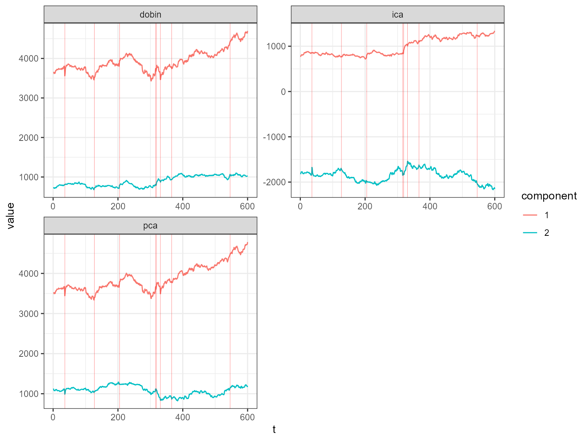
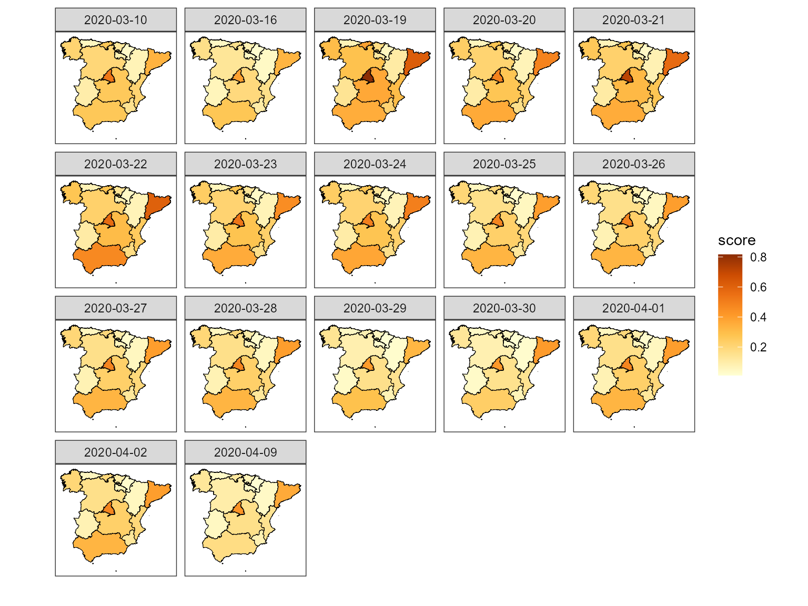

Introduction to composits
composits.Rmdlibrary(composits)
library(ggplot2)
#> Warning: package 'ggplot2' was built under R version 3.6.3
library(forecast)
library(dplyr)
#>
#> Attaching package: 'dplyr'
#> The following objects are masked from 'package:stats':
#>
#> filter, lag
#> The following objects are masked from 'package:base':
#>
#> intersect, setdiff, setequal, union
library(tidyr)
#> Warning: package 'tidyr' was built under R version 3.6.3
library(stringr)
library(rnaturalearthdata)The goal of composits is to find outliers in compositional, multivariate and univariate time series. It is an outlier ensemble method that uses the outlier detection methods from R packages forecast, tsoutliers, anomalize and otsad. All the options provided in those packages can be included in the calls for each of the methods used in the ensemble function so that the user can create a more customize ensemble.
As describe in the paper four dimension reduction methods are used in the multivariate ensemble PCA, DOBIN, ICS and ICA. It is recomended that users verified the scaling and centering options of these methods for each particular example.
Univariate time series outliers
This example uses a univariate time series containing the daily gold prices from the R package forecast.
gold2 <- forecast::na.interp(gold)
out <- uv_tsout_ens(gold2)
#> Converting from tbl_df to tbl_time.
#> Auto-index message: index = date
#> frequency = 7 days
#> trend = 91 days
inds <- names(which(table(out$outliers) > 2))
ts_gold <- dplyr::as_tibble(gold2) %>% mutate(t = 1:length(gold2)) %>% rename(value = x)
ggplot(ts_gold, aes(x=t, y=value)) +
geom_line() +
geom_vline(xintercept =as.numeric(inds), color="red", alpha=0.8, size=0.5, linetype ='dashed') + ylab("Gold prices") +
theme_bw()
#> Don't know how to automatically pick scale for object of type ts. Defaulting to continuous.
The red dashed vertical lines show the time points that have been picked by 3 or more outlier detection methods.
Next we look at the quarterly production of woollen yarn in Australia. This time series is also taken from the R package forecast.
out <- uv_tsout_ens(woolyrnq)
#> Converting from tbl_df to tbl_time.
#> Auto-index message: index = date
#> frequency = 7 days
#> trend = 59.5 days
inds <- names(which(table(out$outliers) > 2))
ts_wool <- dplyr::as_tibble(woolyrnq) %>% mutate(t = 1:length(woolyrnq)) %>% rename(value = x)
ggplot(ts_wool, aes(x=t, y=value)) +
geom_line() +
geom_vline(xintercept =as.numeric(inds), color="red", alpha=0.8, size=0.5, linetype ='dashed') + ylab("Woollen Yarn Production") +
theme_bw()
#> Don't know how to automatically pick scale for object of type ts. Defaulting to continuous.
Multivariate time series outliers
This example includes EU stock market data from the package datasets. It contains the daily closing prices of 4 European stock indices: Germany DAX, Switzerland SMI, France CAC, and UK FTSE. First we plot the data.
stpart <- EuStockMarkets[1:600, ]
stpart <- EuStockMarkets[1:600, ]
as_tibble(stpart) %>% mutate(t = 1:n()) %>%
pivot_longer(cols=1:4) %>%
ggplot2::ggplot( ggplot2::aes(x = t, y = value, color = name)) + ggplot2::geom_line() + ggplot2::theme_bw() 
Then we find multivariate outliers. To find the multivariate outliers, first we decompose the time series to univariate outliers by using Principle Component Analysis (PCA), Independent Component Analysis (ICA), DOBIN (Distance based Outlier BasIs using Neighbours) and ICS (Invariant Coordinate Selection) decomposition methods. The fast=TRUE option leaves out ICS decomposition. Then for a selected number of components (default being 2) we find outliers using the univariate time series ensemble. The outliers are given in the table below.
out <- mv_tsout_ens(stpart, fast=TRUE)
#> Converting from tbl_df to tbl_time.
#> Auto-index message: index = date
#> frequency = 7 days
#> trend = 91 days
#> Converting from tbl_df to tbl_time.
#> Auto-index message: index = date
#> frequency = 7 days
#> trend = 91 days
#> Converting from tbl_df to tbl_time.
#> Auto-index message: index = date
#> frequency = 7 days
#> trend = 91 days
#> Converting from tbl_df to tbl_time.
#> Auto-index message: index = date
#> frequency = 7 days
#> trend = 91 days
#> Converting from tbl_df to tbl_time.
#> Auto-index message: index = date
#> frequency = 7 days
#> trend = 91 days
#> Converting from tbl_df to tbl_time.
#> Auto-index message: index = date
#> frequency = 7 days
#> trend = 91 days
#> Converting from tbl_df to tbl_time.
#> Auto-index message: index = date
#> frequency = 7 days
#> trend = 91 days
#> Converting from tbl_df to tbl_time.
#> Auto-index message: index = date
#> frequency = 7 days
#> trend = 91 days
#> Converting from tbl_df to tbl_time.
#> Auto-index message: index = date
#> frequency = 7 days
#> trend = 91 days
#> Converting from tbl_df to tbl_time.
#> Auto-index message: index = date
#> frequency = 7 days
#> trend = 91 days
#> Converting from tbl_df to tbl_time.
#> Auto-index message: index = date
#> frequency = 7 days
#> trend = 91 days
#> Converting from tbl_df to tbl_time.
#> Auto-index message: index = date
#> frequency = 7 days
#> trend = 91 days
out$outliers
#> Indices Total_Score Num_Coords Num_Methods DOBIN PCA
#> 11 36 1.6928 3 3 0.5460645 0.6552774
#> 18 127 0.3120 1 1 0.3120000 0.0000000
#> 20 205 0.8160 3 2 0.2733508 0.4059739
#> 32 316 1.4400 3 2 0.4710592 0.6156465
#> 34 319 0.6880 2 2 0.1720000 0.0000000
#> 41 331 1.5008 3 3 0.2728727 0.4093091
#> 42 366 0.3120 1 1 0.0000000 0.3120000
#> 48 546 0.3120 1 1 0.3120000 0.0000000
#> ICA forecast tsoutliers otsad anomalize Gap_Score_2
#> 11 0.4914581 0 1.248 0.320 0.1248 72
#> 18 0.0000000 0 0.312 0.000 0.0000 5
#> 20 0.1366754 0 0.624 0.192 0.0000 30
#> 32 0.3532944 0 1.248 0.192 0.0000 60
#> 34 0.5160000 0 0.624 0.064 0.0000 23
#> 41 0.8186182 0 1.248 0.128 0.1248 63
#> 42 0.0000000 0 0.312 0.000 0.0000 5
#> 48 0.0000000 0 0.312 0.000 0.0000 5
draw_table_html(out)| Indices | DOBIN | PCA | ICA | Num_Coords | forecast | tsoutliers | otsad | anomalize | Num_Methods | Gap_Score_2 | Total_Score |
|---|---|---|---|---|---|---|---|---|---|---|---|
| 36 | 0.55 | 0.66 | 0.49 | 3 | 0 | 1.25 | 0.32 | 0.12 | 3 | 72 | 1.69 |
| 331 | 0.27 | 0.41 | 0.82 | 3 | 0 | 1.25 | 0.13 | 0.12 | 3 | 63 | 1.5 |
| 316 | 0.47 | 0.62 | 0.35 | 3 | 0 | 1.25 | 0.19 | 0 | 2 | 60 | 1.44 |
| 205 | 0.27 | 0.41 | 0.14 | 3 | 0 | 0.62 | 0.19 | 0 | 2 | 30 | 0.82 |
| 319 | 0.17 | 0 | 0.52 | 2 | 0 | 0.62 | 0.06 | 0 | 2 | 23 | 0.69 |
| 127 | 0.31 | 0 | 0 | 1 | 0 | 0.31 | 0 | 0 | 1 | 5 | 0.31 |
| 366 | 0 | 0.31 | 0 | 1 | 0 | 0.31 | 0 | 0 | 1 | 5 | 0.31 |
| 546 | 0.31 | 0 | 0 | 1 | 0 | 0.31 | 0 | 0 | 1 | 5 | 0.31 |
The decomposed time series is shown in the figure below.
plot_decomposed_all(obj=out, X = stpart)
animate_ts_ensemble(out, X= stpart, max_frames = 100)The decomposition above shows three decomposition methods. If you want to plot only one method, you can use the plot_decomposed function. The outlying time-points are shown in the figure above and below.
plot_decomposed(obj=out, X = stpart, method = "pca")
Composite time series outliers
For this example we use daily mortality counts in Spain organised by autonomous communities provided by the Spanish government. The dataset records mortality counts from the 18th of April 2018 until the 31th of July 2020. To make the data compositional we divide the autonomous communities counts by the total count for each day.
Compositional data live on a simplex, because the sums add up to a constant. Before analysing such data, it is important to make the data unconstrained. We make the data unconstrained by using a coordinate transformation called the null space coordinate transformation. We use the multivariate outlier detection ensemble discussed above on these unconstrained data. More details are available in our paper.
First let us load this data and plot it.
data('spanish_morte')
df <- spanish_morte[[1]]
uniq_dates <- spanish_morte[[2]]
df2 <- cbind.data.frame(uniq_dates, df)
as_tibble(df2) %>%
pivot_longer(cols=2:20) %>%
ggplot2::ggplot( ggplot2::aes(x = uniq_dates, y = value, color = name)) + ggplot2::geom_line() + ggplot2::theme_bw() 
Next we find the outliers using compositional time series outlier ensemble.
out <- comp_tsout_ens(df, fast=FALSE)
#> Converting from tbl_df to tbl_time.
#> Auto-index message: index = date
#> frequency = 7 days
#> trend = 91 days
#> Converting from tbl_df to tbl_time.
#> Auto-index message: index = date
#> frequency = 7 days
#> trend = 91 days
#> Converting from tbl_df to tbl_time.
#> Auto-index message: index = date
#> frequency = 7 days
#> trend = 91 days
#> Converting from tbl_df to tbl_time.
#> Auto-index message: index = date
#> frequency = 7 days
#> trend = 91 days
#> Warning in locate.outliers.oloop(y = y, fit = fit, types = types, cval =
#> cval, : stopped when 'maxit.oloop = 4' was reached
#> Converting from tbl_df to tbl_time.
#> Auto-index message: index = date
#> frequency = 7 days
#> trend = 91 days
#> Converting from tbl_df to tbl_time.
#> Auto-index message: index = date
#> frequency = 7 days
#> trend = 91 days
#> Converting from tbl_df to tbl_time.
#> Auto-index message: index = date
#> frequency = 7 days
#> trend = 91 days
#> Converting from tbl_df to tbl_time.
#> Auto-index message: index = date
#> frequency = 7 days
#> trend = 91 days
#> Converting from tbl_df to tbl_time.
#> Auto-index message: index = date
#> frequency = 7 days
#> trend = 91 days
#> Converting from tbl_df to tbl_time.
#> Auto-index message: index = date
#> frequency = 7 days
#> trend = 91 days
#> Converting from tbl_df to tbl_time.
#> Auto-index message: index = date
#> frequency = 7 days
#> trend = 91 days
#> Converting from tbl_df to tbl_time.
#> Auto-index message: index = date
#> frequency = 7 days
#> trend = 91 days
#> Converting from tbl_df to tbl_time.
#> Auto-index message: index = date
#> frequency = 7 days
#> trend = 91 days
#> Converting from tbl_df to tbl_time.
#> Auto-index message: index = date
#> frequency = 7 days
#> trend = 91 days
#> Converting from tbl_df to tbl_time.
#> Auto-index message: index = date
#> frequency = 7 days
#> trend = 91 days
#> Converting from tbl_df to tbl_time.
#> Auto-index message: index = date
#> frequency = 7 days
#> trend = 91 days
out$outliers
#> Indices Total_Score Num_Coords Num_Methods DOBIN PCA ICS
#> 9 608 1.333810 3 3 0 0.2659128 0.6785748
#> 14 614 1.245822 3 2 0 0.4823768 0.4103209
#> 17 617 2.527133 3 4 0 0.5900087 1.0411267
#> 18 618 2.058266 3 4 0 0.7032293 0.7282780
#> 19 619 2.011199 3 3 0 0.6871481 0.7116240
#> 20 620 2.320759 3 3 0 0.9789607 0.7211629
#> 21 621 1.718309 3 3 0 0.5712493 0.7288769
#> 22 622 1.905486 3 3 0 0.7245766 0.7503857
#> 23 623 1.490212 3 2 0 0.5770036 0.4908127
#> 24 624 1.490212 3 2 0 0.5770036 0.4908127
#> 25 625 1.490212 3 2 0 0.5770036 0.4908127
#> 26 626 1.490212 3 2 0 0.5770036 0.4908127
#> 27 627 1.180651 3 2 0 0.5472661 0.2327586
#> 28 628 1.180651 3 2 0 0.5472661 0.2327586
#> 30 630 1.490212 3 2 0 0.5770036 0.4908127
#> 31 631 1.490212 3 2 0 0.5770036 0.4908127
#> 38 638 1.105713 3 3 0 0.4284070 0.2488990
#> ICA forecast tsoutliers otsad anomalize Gap_Score_2
#> 9 0.3893229 0.0000000 0.2751652 0.6842925 0.3743527 1
#> 14 0.3531239 0.0000000 0.0000000 0.6842925 0.5615291 0
#> 17 0.8959980 0.3095609 0.8254957 0.4561950 0.9358818 4
#> 18 0.6267591 0.6191218 0.2751652 0.2280975 0.9358818 2
#> 19 0.6124265 0.6191218 0.0000000 0.4561950 0.9358818 2
#> 20 0.6206358 0.9286827 0.0000000 0.4561950 0.9358818 3
#> 21 0.4181830 0.9286827 0.0000000 0.2280975 0.5615291 2
#> 22 0.4305234 0.9286827 0.0000000 0.2280975 0.7487054 2
#> 23 0.4223955 0.9286827 0.0000000 0.0000000 0.5615291 1
#> 24 0.4223955 0.9286827 0.0000000 0.0000000 0.5615291 1
#> 25 0.4223955 0.9286827 0.0000000 0.0000000 0.5615291 1
#> 26 0.4223955 0.9286827 0.0000000 0.0000000 0.5615291 1
#> 27 0.4006261 0.6191218 0.0000000 0.0000000 0.5615291 0
#> 28 0.4006261 0.6191218 0.0000000 0.0000000 0.5615291 0
#> 30 0.4223955 0.9286827 0.0000000 0.0000000 0.5615291 1
#> 31 0.4223955 0.9286827 0.0000000 0.0000000 0.5615291 1
#> 38 0.4284070 0.0000000 0.2751652 0.4561950 0.3743527 0
draw_table_html(out, uniq_dates)| Indices | DOBIN | PCA | ICS | ICA | Num_Coords | forecast | tsoutliers | otsad | anomalize | Num_Methods | Gap_Score_2 | Total_Score |
|---|---|---|---|---|---|---|---|---|---|---|---|---|
| 2020-03-19 | 0 | 0.59 | 1.04 | 0.9 | 3 | 0.31 | 0.83 | 0.46 | 0.94 | 4 | 4 | 2.53 |
| 2020-03-22 | 0 | 0.98 | 0.72 | 0.62 | 3 | 0.93 | 0 | 0.46 | 0.94 | 3 | 3 | 2.32 |
| 2020-03-20 | 0 | 0.7 | 0.73 | 0.63 | 3 | 0.62 | 0.28 | 0.23 | 0.94 | 4 | 2 | 2.06 |
| 2020-03-21 | 0 | 0.69 | 0.71 | 0.61 | 3 | 0.62 | 0 | 0.46 | 0.94 | 3 | 2 | 2.01 |
| 2020-03-24 | 0 | 0.72 | 0.75 | 0.43 | 3 | 0.93 | 0 | 0.23 | 0.75 | 3 | 2 | 1.91 |
| 2020-03-23 | 0 | 0.57 | 0.73 | 0.42 | 3 | 0.93 | 0 | 0.23 | 0.56 | 3 | 2 | 1.72 |
| 2020-03-25 | 0 | 0.58 | 0.49 | 0.42 | 3 | 0.93 | 0 | 0 | 0.56 | 2 | 1 | 1.49 |
| 2020-03-26 | 0 | 0.58 | 0.49 | 0.42 | 3 | 0.93 | 0 | 0 | 0.56 | 2 | 1 | 1.49 |
| 2020-03-27 | 0 | 0.58 | 0.49 | 0.42 | 3 | 0.93 | 0 | 0 | 0.56 | 2 | 1 | 1.49 |
| 2020-03-28 | 0 | 0.58 | 0.49 | 0.42 | 3 | 0.93 | 0 | 0 | 0.56 | 2 | 1 | 1.49 |
| 2020-04-01 | 0 | 0.58 | 0.49 | 0.42 | 3 | 0.93 | 0 | 0 | 0.56 | 2 | 1 | 1.49 |
| 2020-04-02 | 0 | 0.58 | 0.49 | 0.42 | 3 | 0.93 | 0 | 0 | 0.56 | 2 | 1 | 1.49 |
| 2020-03-10 | 0 | 0.27 | 0.68 | 0.39 | 3 | 0 | 0.28 | 0.68 | 0.37 | 3 | 1 | 1.33 |
| 2020-03-16 | 0 | 0.48 | 0.41 | 0.35 | 3 | 0 | 0 | 0.68 | 0.56 | 2 | 0 | 1.25 |
| 2020-03-29 | 0 | 0.55 | 0.23 | 0.4 | 3 | 0.62 | 0 | 0 | 0.56 | 2 | 0 | 1.18 |
| 2020-03-30 | 0 | 0.55 | 0.23 | 0.4 | 3 | 0.62 | 0 | 0 | 0.56 | 2 | 0 | 1.18 |
| 2020-04-09 | 0 | 0.43 | 0.25 | 0.43 | 3 | 0 | 0.28 | 0.46 | 0.37 | 3 | 0 | 1.11 |
The table above shows the outlying dates and the associated scores. The outlying dates correspond to the COVID-19 outbreak. We can see the decomposed univariate time series in the following plot and the spike around mid March in 2020.
plot_decomposed_all(obj=out, X = df)
animate_ts_ensemble(out, X= df, max_frames = 100)
Next we apportion the outlying scores back to the autonomous communities. This is another coordinate transformation from the outlier score space to the original coordinate space.
apportioned <- apportion_scores_comp(out)
apportioned1 <- cbind.data.frame(colnames(df), apportioned$scores_out)
colnames(apportioned1)[1] <- 'reg'
colnames(apportioned1)[2:dim(apportioned1)[2]] <- paste(uniq_dates[out$outliers$Indices])
apportioned1
#> reg 2020-03-10 2020-03-16 2020-03-19 2020-03-20 2020-03-21 2020-03-22
#> 1 AN 0.18779585 0.22885067 0.28553464 0.33792887 0.31833476 0.44720375
#> 2 AR 0.06995244 0.04781114 0.10897212 0.07701845 0.07718908 0.07778338
#> 3 AS 0.04285187 0.04413626 0.05680638 0.05705547 0.05466836 0.07036824
#> 4 IB 0.03148093 0.03092108 0.04246123 0.04086880 0.03940013 0.04905948
#> 5 CN 0.12863464 0.10534214 0.17698833 0.15368582 0.14965588 0.17616045
#> 6 CB 0.26734903 0.16675842 0.38897287 0.28434033 0.28393723 0.28658839
#> 7 CL 0.19051377 0.13528618 0.27049659 0.21351242 0.21096953 0.22769388
#> 8 CM 0.23877296 0.20249297 0.33366370 0.28844389 0.28220042 0.32326320
#> 9 CT 0.44411025 0.46645384 0.79995515 0.71942976 0.69682572 0.84549077
#> 10 VC 0.19367239 0.17913538 0.26898573 0.24323494 0.23701907 0.27790038
#> 11 EX 0.09474733 0.06454023 0.13568715 0.10430940 0.10351446 0.10874271
#> 12 GA 0.19036919 0.16595018 0.26116787 0.23363355 0.22699888 0.27063456
#> 13 MD 0.50460337 0.49673750 0.75815615 0.64957346 0.63541672 0.72852453
#> 14 MC 0.14078262 0.10354263 0.19876605 0.16014426 0.15777139 0.17337757
#> 15 NC 0.03565162 0.02382922 0.05336957 0.04044660 0.04016417 0.04202169
#> 16 PV 0.11913728 0.08531787 0.16981750 0.13381997 0.13239747 0.14175318
#> 17 RI 0.07964980 0.04847897 0.11618781 0.08437617 0.08434256 0.08456358
#> 18 CE 0.09933221 0.06063033 0.14357275 0.10487096 0.10474327 0.10558308
#> 19 ML 0.05775545 0.03580550 0.08385528 0.06193622 0.06176238 0.06290570
#> 2020-03-23 2020-03-24 2020-03-25 2020-03-26 2020-03-27 2020-03-28
#> 1 0.30430377 0.32140013 0.27374383 0.27374383 0.27374383 0.27374383
#> 2 0.07610662 0.07433716 0.05719015 0.05719015 0.05719015 0.05719015
#> 3 0.05959884 0.05994781 0.05279438 0.05279438 0.05279438 0.05279438
#> 4 0.04229239 0.04222769 0.03698680 0.03698680 0.03698680 0.03698680
#> 5 0.15859986 0.16041631 0.12600688 0.12600688 0.12600688 0.12600688
#> 6 0.28418421 0.28308452 0.19947106 0.19947106 0.19947106 0.19947106
#> 7 0.21598839 0.21589844 0.16182498 0.16182498 0.16182498 0.16182498
#> 8 0.29287144 0.28938278 0.24221559 0.24221559 0.24221559 0.24221559
#> 9 0.61394993 0.66029048 0.55795710 0.55795710 0.55795710 0.55795710
#> 10 0.24681710 0.24170995 0.21427599 0.21427599 0.21427599 0.21427599
#> 11 0.10486157 0.10439451 0.07720094 0.07720094 0.07720094 0.07720094
#> 12 0.24061760 0.24141953 0.19850428 0.19850428 0.19850428 0.19850428
#> 13 0.64736970 0.61523641 0.59418144 0.59418144 0.59418144 0.59418144
#> 14 0.16254656 0.16264437 0.12385437 0.12385437 0.12385437 0.12385437
#> 15 0.03923493 0.03977152 0.02850375 0.02850375 0.02850375 0.02850375
#> 16 0.13477831 0.13388368 0.10205450 0.10205450 0.10205450 0.10205450
#> 17 0.08393875 0.08411964 0.05798899 0.05798899 0.05798899 0.05798899
#> 18 0.10502681 0.10508465 0.07252405 0.07252405 0.07252405 0.07252405
#> 19 0.06159780 0.06176548 0.04282939 0.04282939 0.04282939 0.04282939
#> 2020-03-29 2020-03-30 2020-04-01 2020-04-02 2020-04-09
#> 1 0.23226961 0.23226961 0.27374383 0.27374383 0.17336392
#> 2 0.03151780 0.03151780 0.05719015 0.05719015 0.03283808
#> 3 0.04355975 0.04355975 0.05279438 0.05279438 0.02154476
#> 4 0.02978636 0.02978636 0.03698680 0.03698680 0.01555677
#> 5 0.08177355 0.08177355 0.12600688 0.12600688 0.05765405
#> 6 0.08450321 0.08450321 0.19947106 0.19947106 0.10839043
#> 7 0.08831749 0.08831749 0.16182498 0.16182498 0.08111837
#> 8 0.17346836 0.17346836 0.24221559 0.24221559 0.11097469
#> 9 0.48196683 0.48196683 0.55795710 0.55795710 0.38051383
#> 10 0.17011307 0.17011307 0.21427599 0.21427599 0.09446458
#> 11 0.03966153 0.03966153 0.07720094 0.07720094 0.03979536
#> 12 0.14135049 0.14135049 0.19850428 0.19850428 0.08844143
#> 13 0.52199738 0.52199738 0.59418144 0.59418144 0.25970449
#> 14 0.07134354 0.07134354 0.12385437 0.12385437 0.06078094
#> 15 0.01394001 0.01394001 0.02850375 0.02850375 0.01660820
#> 16 0.05764362 0.05764362 0.10205450 0.10205450 0.05117750
#> 17 0.02277145 0.02277145 0.05798899 0.05798899 0.03242405
#> 18 0.02841316 0.02841316 0.07252405 0.07252405 0.03978967
#> 19 0.01735797 0.01735797 0.04282939 0.04282939 0.02394576Next we plot this using the map of Spain.
df3 <- apportioned1 %>%
mutate(reg = str_replace(reg, "RI", "LO")) %>%
mutate(reg = str_replace(reg, "NC", "NA")) %>%
mutate(reg = str_replace(reg, "MC", "MU")) %>%
pivot_longer(-reg, names_to = "date", values_to = "score")
spain <- rnaturalearth::ne_states(country = "spain", returnclass = "sf")
sp_regions <- spain %>%
mutate(reg = str_sub(code_hasc, 4, 5)) %>%
group_by(reg) %>%
summarise()
# combine map info with data
# XXX dropping Canary islands for now
sp_data <- inner_join(sp_regions, df3, by="reg") %>%
filter(reg != "CN")
#template for drawing map
sp_data %>%
ggplot() +
geom_sf(aes(fill=score)) +
theme_bw() +
scale_fill_distiller(palette = "YlOrBr", direction = 1) +
facet_wrap(~date, ncol=6)
See our website or our paper (Kandanaarachchi et al. 2020) for more examples.
References
Kandanaarachchi, Sevvandi, Patricia Menendez, Ruben Loaiza-Maya, and Ursula Laa. 2020. “Outliers in Compositional Time Series Data.†Working Paper. https://www.researchgate.net/publication/343712288_Outliers_in_compositional_time_series_data.